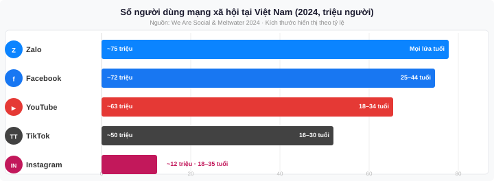
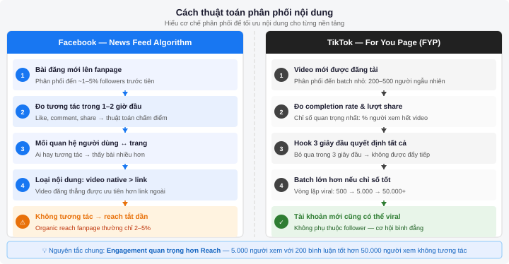
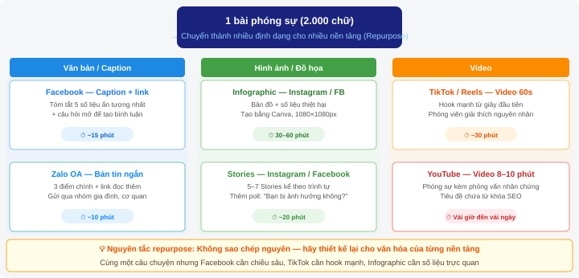

Mạng xã hội & Phân phối nội dung
Sau chương này, sinh viên có thể:
- Hiểu cách thuật toán mạng xã hội hoạt động và ảnh hưởng đến việc phân phối nội dung báo chí
- Xây dựng chiến lược nội dung đa nền tảng phù hợp với đặc thù của từng mạng xã hội
- Tối ưu hóa bài đăng cho Facebook, Instagram, TikTok và YouTube
- Sử dụng công cụ lên lịch để quản lý phân phối nội dung hiệu quả
- Đo lường và phân tích hiệu quả hoạt động trên mạng xã hội
7.1 Mạng xã hội và báo chí hiện đại
Thay đổi mô hình phân phối tin tức
Trong khoảng mười năm trở lại đây, cách người Việt Nam tiếp cận tin tức đã thay đổi căn bản. Nếu như trước đây độc giả phải chủ động tìm đến tờ báo — ra sạp mua báo giấy hoặc gõ địa chỉ website vào trình duyệt — thì ngày nay tin tức tự tìm đến họ thông qua dòng thông tin trên mạng xã hội. Người dùng Facebook buổi sáng cuộn qua News Feed thay vì lật tờ báo. Học sinh sinh viên biết tin thời sự nhờ TikTok trước khi mở VnExpress hay Tuổi Trẻ.
Sự dịch chuyển này đặt ra một thách thức lớn cho các tòa soạn và nhà báo: muốn nội dung chất lượng đến được tay độc giả, không thể chỉ dựa vào website hay ứng dụng riêng của mình. Phân phối qua mạng xã hội đã trở thành kỹ năng bắt buộc trong hành trang của nhà báo hiện đại — ngang hàng với kỹ năng viết bài hay phỏng vấn.
Số liệu người dùng mạng xã hội Việt Nam
Việt Nam nằm trong nhóm quốc gia có tỷ lệ sử dụng mạng xã hội cao nhất khu vực. Báo cáo của We Are Social và Meltwater năm 2024 ghi nhận những con số đáng chú ý:
| Nền tảng | Số người dùng tại Việt Nam | Nhóm tuổi chính | Đặc điểm nổi bật |
|---|---|---|---|
| ~72 triệu | 25–44 tuổi | Nền tảng phổ biến nhất; mạnh về cộng đồng và chia sẻ | |
| YouTube | ~63 triệu | 18–34 tuổi | Nền tảng video số 1; thời gian xem trung bình cao |
| TikTok | ~50 triệu | 16–30 tuổi | Tăng trưởng nhanh nhất; thống trị nội dung giải trí |
| Zalo | ~75 triệu | Mọi lứa tuổi | Ứng dụng nhắn tin số 1 VN; phân phối qua nhóm chat |
| ~12 triệu | 18–35 tuổi | Visual-first; phổ biến trong giới sáng tạo nội dung |

Zalo thường bị bỏ quên trong chiến lược phân phối nội dung, nhưng thực tế đây là kênh rất hiệu quả để tiếp cận nhóm độc giả lớn tuổi hơn (35+) và chia sẻ tin tức qua các nhóm gia đình, cơ quan. Nhiều tòa soạn như VnExpress, Tuổi Trẻ đã có kênh Zalo chính thức với hàng triệu người theo dõi.
Thách thức của mạng xã hội đối với báo chí
Cùng với cơ hội tiếp cận hàng chục triệu độc giả tiềm năng, mạng xã hội cũng mang đến những thách thức nghiêm trọng mà mọi nhà báo phải nhận thức rõ:
Tin giả (Fake news) và thông tin sai lệch. Tốc độ lan truyền của thông tin sai trên mạng xã hội nhanh hơn nhiều so với tốc độ cải chính. Một nghiên cứu của MIT (2018) cho thấy tin giả lan truyền nhanh hơn tin thật tới 6 lần trên Twitter/X. Tại Việt Nam, trong giai đoạn dịch COVID-19, Bộ Thông tin và Truyền thông ghi nhận hàng nghìn trường hợp đăng tải thông tin sai sự thật. Chính vì vậy, nhà báo đóng vai trò đặc biệt quan trọng trong việc kiểm chứng và cung cấp thông tin chính xác.
Buồng vang (Echo Chamber). Thuật toán mạng xã hội có xu hướng hiển thị nội dung mà người dùng đã thích và tương tác — dẫn đến việc mỗi người chỉ tiếp xúc với những quan điểm tương đồng với mình. Hiện tượng này gây ra sự phân cực trong dư luận và là một thách thức cho báo chí khách quan, đa chiều.
Phụ thuộc vào thuật toán. Khi phân phối nội dung qua mạng xã hội, tòa soạn mất quyền kiểm soát trực tiếp. Facebook thay đổi thuật toán, lượng người xem có thể giảm tới 50% chỉ sau một đêm — như đã xảy ra vào năm 2018 khi Facebook ưu tiên bài từ bạn bè hơn bài từ trang fanpage. Vì vậy, không nên đặt cược toàn bộ vào một nền tảng.
Đừng coi mạng xã hội là mục tiêu cuối — hãy coi đó là kênh dẫn đưa độc giả về trang web hoặc ứng dụng của tòa soạn. Lượng follower trên Facebook là tài sản thuộc về Facebook, không phải của bạn. Lượng đăng ký email hay subscriber thật sự mới là tài sản dài hạn của một tòa soạn.
7.2 Hiểu thuật toán mạng xã hội
Để phân phối nội dung hiệu quả, nhà báo cần hiểu — ít nhất ở mức độ cơ bản — cách các nền tảng quyết định hiển thị nội dung nào cho ai. Mỗi nền tảng có logic riêng, nhưng đều hướng đến một mục tiêu chung: giữ người dùng ở lại lâu nhất có thể.
Facebook: EdgeRank và các yếu tố ảnh hưởng reach
Facebook sử dụng hệ thống thuật toán phức tạp (từng gọi là EdgeRank, nay là một mô hình máy học nhiều lớp) để xác định thứ tự xuất hiện của mỗi bài đăng trong News Feed. Các yếu tố chính bao gồm:
- Mức độ tương tác (Engagement): Bài nhận nhiều like, comment, share trong những phút đầu đăng sẽ được đẩy tiếp cho nhiều người hơn. Facebook đặc biệt đánh giá cao comment và share hơn là react đơn thuần.
- Mối quan hệ giữa người dùng và trang: Nếu ai đó thường xuyên tương tác với fanpage của bạn, họ sẽ thấy bài của bạn nhiều hơn. Đây là lý do tại sao việc xây dựng cộng đồng gắn kết quan trọng hơn số lượng người theo dõi.
- Loại nội dung: Video native (đăng thẳng lên Facebook thay vì chia sẻ link YouTube) thường được ưu tiên. Bài chỉ có link ra ngoài thường bị giảm reach vì Facebook không muốn người dùng rời nền tảng.
- Tính mới (Recency): Bài vừa đăng có lợi thế trong vài giờ đầu. Sau đó, nếu không có tương tác, bài sẽ dần mất khả năng hiển thị tự nhiên (organic reach).
Đặt câu hỏi cuối bài để khuyến khích bình luận. Ví dụ: thay vì chỉ chia sẻ bài về ô nhiễm không khí Hà Nội, hãy thêm dòng: "Bạn đang sống ở đâu? Hôm nay chất lượng không khí ở khu vực bạn thế nào?" — câu hỏi có tính địa phương hóa giúp tăng tương tác đáng kể.
TikTok: For You Page hoạt động thế nào
TikTok có lẽ là nền tảng dân chủ nhất trong việc phân phối nội dung: một tài khoản mới hoàn toàn có thể đạt triệu lượt xem chỉ sau vài ngày nếu nội dung đủ hấp dẫn. Đây là điều gần như không thể xảy ra trên Facebook hay YouTube (nơi subscriber và lịch sử kênh đóng vai trò lớn).
Cơ chế For You Page (FYP) của TikTok hoạt động theo vòng lặp thử nghiệm nhỏ: mỗi video mới được phân phối đến một nhóm nhỏ người dùng (thường vài trăm đến vài nghìn người). Nếu tỷ lệ hoàn thành video cao và có nhiều tương tác, video sẽ được đẩy đến nhóm lớn hơn, cứ thế mở rộng dần. Các chỉ số TikTok coi trọng nhất:
- Tỷ lệ xem hết video (Completion rate): Người xem có xem đến hết không? Đây là chỉ số quan trọng nhất. Video ngắn (15–30 giây) có lợi thế về chỉ số này.
- Lượt xem lại (Replay): Người dùng xem lại video là tín hiệu rất tích cực.
- Lượt chia sẻ (Share): Được TikTok đánh giá cao hơn cả like và comment.
- Hook 3 giây đầu: Nếu người xem bỏ qua trong 3 giây đầu, video sẽ không được đẩy tiếp. Đây là lý do tại sao cách mở đầu video TikTok cực kỳ quan trọng.
Nguyên tắc chung: Engagement quan trọng hơn Reach
Dù là Facebook, TikTok, Instagram hay YouTube — nguyên tắc vàng đều giống nhau: chất lượng tương tác quan trọng hơn số lượng tiếp cận. Một bài đăng chỉ tiếp cận 5.000 người nhưng có 300 bình luận sẽ được thuật toán đánh giá cao hơn bài tiếp cận 50.000 người nhưng không ai tương tác. Điều này có nghĩa là: thay vì cố gắng đăng thật nhiều nội dung, hãy tập trung vào từng bài đăng để tạo ra giá trị thực sự và khơi gợi phản ứng từ người xem.

7.3 Chiến lược nội dung cho từng nền tảng
Sai lầm phổ biến nhất của các tòa soạn khi mới bước vào mạng xã hội là đăng cùng một nội dung lên tất cả các kênh. Mỗi nền tảng có văn hóa, định dạng và kỳ vọng của người dùng hoàn toàn khác nhau. Nội dung được thiết kế riêng cho từng nền tảng luôn hoạt động hiệu quả hơn nội dung "sao chép nguyên".
Facebook: Chiều sâu, video native và kết nối cộng đồng
Facebook phù hợp nhất với nội dung có chiều sâu và kích thích thảo luận. Người dùng Facebook Việt Nam — đặc biệt nhóm 25–45 tuổi — sẵn sàng đọc bài dài, chia sẻ bài phân tích và tham gia tranh luận. Đây là nền tảng mạnh cho:
- Bài viết phân tích dài: 300–600 chữ trong caption, trình bày rõ ràng với xuống dòng thường xuyên (đọc trên điện thoại). Kết thúc bằng câu hỏi mở.
- Video native (đăng thẳng lên Facebook): Được ưu tiên reach hơn link YouTube. Nên có phụ đề vì 80% người xem không bật âm thanh.
- Facebook Live: Phù hợp với tường thuật trực tiếp sự kiện, phiên hỏi đáp với chuyên gia, hay đưa tin từ hiện trường. Lượt xem live thường cao hơn video thường 3–6 lần.
- Album ảnh: Hiệu quả để kể chuyện bằng hình ảnh — chẳng hạn phóng sự ảnh về một vùng bị ngập lũ hay một lễ hội truyền thống.
Fanpage Báo Tuổi Trẻ trên Facebook thường đăng video native thời lượng 2–3 phút kèm caption đầy đủ thông tin. Dạng nội dung này cho phép người đọc hiểu tin dù không xem video — và video giúp tăng engagement cho bài.
Instagram: Visual-first, Stories và Reels
Instagram là nền tảng của hình ảnh và thẩm mỹ. Người dùng Instagram đến để xem nội dung đẹp, cảm hứng và ngắn gọn. Đây không phải nơi để đăng tin tức khô khan, nhưng lại rất phù hợp với:
- Infographic và data visualization: Biến số liệu phức tạp thành hình ảnh trực quan, đẹp mắt. Kích thước tối ưu là hình vuông (1080×1080px) hoặc dọc (1080×1350px).
- Stories (24 giờ): Hậu trường tòa soạn, thăm dò ý kiến (poll), hỏi đáp nhanh. Stories tạo cảm giác thân mật và gần gũi với người theo dõi.
- Reels (video ngắn): Định dạng tương tự TikTok, phân phối tốt cho tài khoản mới. Phù hợp với tin tức nhanh, tóm tắt sự kiện dạng video.
- Caption ngắn gọn: Không giống Facebook, người dùng Instagram ít đọc caption dài. Hãy để hình ảnh kể câu chuyện, caption chỉ cần vài dòng.
TikTok: Video ngắn, hooks mạnh và âm nhạc
TikTok đã thay đổi cách một thế hệ tiêu thụ thông tin. Các tòa soạn như Washington Post, The Guardian hay trong nước là VnExpress, Zing News đã có mặt trên TikTok và đạt lượng tiếp cận đáng kể. Bí quyết thành công trên TikTok:
- Hook 3 giây đầu: Mở đầu phải gây tò mò hoặc đặt câu hỏi ngay lập tức. Ví dụ: "Tại sao giá xăng lại tăng vào đúng lúc này?" hiệu quả hơn là "Hôm nay chúng tôi sẽ giải thích về giá xăng."
- Trending sounds: Sử dụng âm nhạc đang thịnh hành giúp video được đẩy vào FYP. Tuy nhiên với nội dung tin tức nghiêm túc, nên cân nhắc kỹ để không mất tính trang trọng.
- Thời lượng tối ưu: 30–60 giây cho tin tức nhanh; 1–3 phút cho giải thích/phân tích. Tránh video dài hơn 3 phút trừ khi nội dung đặc biệt hấp dẫn.
- Text overlay (phụ đề bằng chữ): Giúp người xem không cần bật âm và tăng khả năng tiếp cận.
YouTube: Nội dung dài, Shorts và SEO
YouTube là công cụ tìm kiếm video lớn thứ hai thế giới (chỉ sau Google). Người dùng YouTube chủ động tìm kiếm nội dung — khác hoàn toàn với TikTok hay Facebook, nơi nội dung được đẩy đến người dùng. Điều này có nghĩa là YouTube phù hợp với nội dung "evergreen" (không lỗi thời) như phóng sự chuyên sâu, giải thích vấn đề phức tạp, hay tư liệu về sự kiện quan trọng.
- Video dài (10–20 phút): Phóng sự điều tra, chân dung nhân vật, giải thích chính sách. YouTube ưu tiên nội dung giữ người xem lâu trên nền tảng.
- YouTube Shorts: Tương tự TikTok, được YouTube đẩy mạnh để cạnh tranh. Có thể tái sử dụng video TikTok (bỏ logo TikTok trước khi đăng).
- SEO cho YouTube: Tiêu đề chứa từ khóa, mô tả chi tiết 200–300 chữ, thẻ tag liên quan. Thumbnail hấp dẫn có thể tăng CTR tới 40%.
Bảng so sánh: Nội dung phù hợp theo nền tảng
| Loại nội dung | TikTok | YouTube | ||
|---|---|---|---|---|
| Tin nhanh / Breaking news | Rất tốt | Stories | Tốt | Kém |
| Phóng sự điều tra | Tốt (link) | Kém | Kém | Rất tốt |
| Infographic / số liệu | Tốt | Rất tốt | Tốt | Kém |
| Video phỏng vấn ngắn | Tốt | Reels | Rất tốt | Tốt |
| Tường thuật trực tiếp | FB Live | IG Live | TikTok Live | YouTube Live |
| Phóng sự ảnh | Album | Rất tốt | Slideshow | Kém |
| Hậu trường / behind-the-scenes | Stories | Rất tốt | Rất tốt | Kém |
7.4 Xây dựng lịch đăng bài (Content Calendar)
Tần suất đăng bài lý tưởng
Một trong những câu hỏi phổ biến nhất khi mới bắt đầu quản lý mạng xã hội là: "Nên đăng bài bao nhiêu lần một ngày?" Không có con số hoàn hảo cho mọi tòa soạn, nhưng dưới đây là khuyến nghị dựa trên thực tế:
| Nền tảng | Tần suất khuyến nghị | Giờ đăng hiệu quả | Ghi chú |
|---|---|---|---|
| 1–2 bài/ngày | 7–9h, 11–13h, 19–21h | Đăng quá nhiều làm giảm reach từng bài | |
| 1 post/ngày + 3–5 Stories | 8–10h, 18–20h | Stories có thể đăng nhiều hơn | |
| TikTok | 1–3 video/ngày | 7–9h, 12–14h, 20–22h | Consistency quan trọng hơn số lượng |
| YouTube | 2–4 video/tuần | Thứ 2, 3, 5 (19h) | Chất lượng quan trọng hơn tần suất |
Template lịch nội dung tuần
Lịch nội dung (Content Calendar) giúp đội ngũ tòa soạn nhỏ vận hành bài bản, tránh tình trạng "không biết hôm nay đăng gì." Dưới đây là một template đơn giản cho tòa soạn quy mô nhỏ với 1–2 người phụ trách mạng xã hội:
| Thứ | TikTok | ||
|---|---|---|---|
| Thứ 2 | Tin tổng hợp tuần (7h) + Phân tích (19h) | Infographic xu hướng tuần | Video giải thích tin nóng |
| Thứ 3 | Tin thời sự (7h) | Story hậu trường tòa soạn | Video phỏng vấn ngắn |
| Thứ 4 | Video native (12h) + Tin thời sự (19h) | Ảnh phóng sự | Trả lời câu hỏi từ comment |
| Thứ 5 | Phóng sự dài / Feature story (7h) | Infographic số liệu | Video "Bạn có biết không?" |
| Thứ 6 | Tin cuối tuần (7h) + Video (19h) | Reels tóm tắt tuần | Nội dung nhẹ nhàng, hài hước |
| Thứ 7 | Nội dung evergreen hoặc "Nhìn lại" | Ảnh đẹp / Phong cảnh | Behind-the-scenes |
| CN | Nội dung nhẹ / Interactive | Đăng ký newsletter (Story) | Nghỉ hoặc video nhẹ |
Công cụ lên lịch đăng bài
Thay vì ngồi trước điện thoại chờ đến đúng giờ mới đăng, hãy sử dụng công cụ lên lịch để chuẩn bị nội dung trước và hệ thống tự động đăng đúng thời điểm.
Buffer là lựa chọn phổ biến cho cá nhân và nhóm nhỏ. Gói miễn phí cho phép kết nối 3 kênh mạng xã hội và lên lịch 10 bài/kênh. Giao diện đơn giản, dễ dùng, có lịch trực quan để hình dung toàn bộ kế hoạch nội dung trong tháng.
Meta Business Suite là công cụ chính thức của Meta (miễn phí hoàn toàn) cho phép quản lý và lên lịch bài đăng cho cả Facebook và Instagram. Có thêm tính năng xem thống kê, quản lý tin nhắn và bình luận từ một nơi — rất tiện lợi cho tòa soạn.
Dành một buổi mỗi tuần (thứ 6 chiều hoặc tối chủ nhật) để soạn và lên lịch toàn bộ nội dung cho tuần tới. Cách làm việc theo "batch" này tiết kiệm thời gian đáng kể so với việc soạn và đăng từng bài mỗi ngày. Tuy nhiên, luôn giữ sự linh hoạt để đăng tin nóng khi cần.
7.5 Thực hành: Lên kế hoạch và đăng bài
Trong phần này, bạn sẽ học cách tạo một bài đăng Facebook tối ưu và kỹ thuật repurpose — chuyển đổi một bài báo thành nhiều định dạng nội dung mạng xã hội khác nhau.
Step-by-step: Tạo bài đăng Facebook tối ưu
- Chọn góc độ phù hợp với Facebook: Đọc lại bài báo gốc và xác định chi tiết nào có khả năng gây tò mò hoặc phản ứng cảm xúc mạnh nhất — đó sẽ là điểm mở đầu bài đăng.
- Viết caption 3 phần: (1) Câu mở đầu gây chú ý — ngắn, trực tiếp; (2) Thông tin chính từ bài báo — tóm gọn 2–4 điểm quan trọng, mỗi điểm một đoạn riêng; (3) Câu hỏi mở để khuyến khích bình luận.
- Chọn hình ảnh: Ưu tiên ảnh chân thực từ hiện trường hơn ảnh minh họa. Kích thước tối ưu cho ảnh đơn là 1200×630px. Tránh chèn quá nhiều chữ vào ảnh.
- Thêm emoji có chọn lọc: 1–2 emoji phù hợp ở đầu hoặc giữa đoạn giúp bắt mắt khi lướt Feed mà không làm mất tính chuyên nghiệp.
- Đặt link bài báo gốc: Dán link vào để Facebook tự tạo preview. Sau khi preview xuất hiện, có thể xóa URL khỏi caption cho gọn.
- Chọn thời điểm đăng: Sử dụng Facebook Insights để xem giờ nào khán giả của bạn online nhiều nhất. Lên lịch thay vì đăng ngay nếu chưa phải giờ vàng.
- Theo dõi 60 phút đầu: Trả lời bình luận sớm giúp tăng engagement và báo hiệu cho thuật toán rằng bài đăng đang được quan tâm.
Repurpose nội dung: 1 bài báo → nhiều định dạng
"Repurpose" (tái sử dụng nội dung) là kỹ năng chiến lược giúp nhà báo và tòa soạn tạo ra nhiều nội dung từ một nguồn duy nhất, tiết kiệm thời gian mà vẫn duy trì sự hiện diện đều đặn trên nhiều nền tảng.
Ví dụ thực tế: Bạn có một bài phóng sự 2.000 chữ về tình trạng ngập lụt ở Đồng bằng sông Cửu Long. Từ một bài báo đó, có thể tạo ra:
| Định dạng | Nền tảng | Nội dung cụ thể | Thời gian sản xuất |
|---|---|---|---|
| Caption + link | Tóm tắt 5 số liệu ấn tượng nhất + câu hỏi | 15 phút | |
| Infographic | Instagram / Facebook | Bản đồ vùng ngập + số liệu thiệt hại | 30–60 phút (Canva) |
| Video ngắn | TikTok / Reels | Phóng viên giải thích nguyên nhân trong 60 giây | 30 phút quay + dựng |
| Thread / Series Stories | Facebook / Instagram | 5–7 Stories kể câu chuyện theo trình tự | 20 phút |
| Video giải thích dài | YouTube | Phóng sự video 8–10 phút kèm phỏng vấn | Vài giờ đến vài ngày |
| Bản tin ngắn | Zalo OA | 3 điểm chính, đường link đọc thêm | 10 phút |

7.6 Đo lường hiệu quả
Đăng bài xong mà không đo lường thì giống như viết bài mà không biết ai đọc. Đo lường giúp bạn hiểu nội dung nào hoạt động tốt, tối ưu chiến lược và thuyết phục ban biên tập đầu tư thêm vào mạng xã hội.
Các chỉ số quan trọng cần theo dõi
| Chỉ số | Định nghĩa | Mức tốt (tham khảo) | Ý nghĩa |
|---|---|---|---|
| Reach | Số người dùng duy nhất đã thấy bài đăng | — | Đo mức độ tiếp cận; không đủ nếu không có engagement |
| Engagement Rate | (Like + comment + share) / Reach × 100% | 1–5% là tốt | Chỉ số phản ánh chất lượng nội dung |
| Click-through Rate (CTR) | Số click vào link / Số người xem bài × 100% | 1–3% là tốt | Bài có đưa người về website không? |
| Video Completion Rate | % người xem đến hết video | >50% là tốt | Video có đủ hấp dẫn để giữ người xem không? |
| Follower Growth | Số người theo dõi mới trong kỳ | >2%/tháng là tốt | Kênh có đang tăng trưởng không? |
Facebook Insights
Facebook Insights (trong Meta Business Suite) cung cấp dữ liệu chi tiết về hiệu quả từng bài đăng và tổng thể fanpage. Các báo cáo quan trọng cần xem hàng tuần:
- Overview: Reach, engagement và follower mới trong 7–28 ngày qua.
- Content: Xem hiệu quả từng bài đăng để biết loại nội dung nào hoạt động tốt nhất.
- Audience: Thông tin nhân khẩu học của người theo dõi — tuổi, giới tính, địa điểm. Rất hữu ích để điều chỉnh nội dung cho phù hợp.
TikTok Analytics
TikTok cung cấp analytics miễn phí cho mọi tài khoản (cần chuyển sang Creator Account). Chú ý đặc biệt đến: Average watch time (thời gian xem trung bình) và Traffic source (người xem đến từ FYP hay từ follower) — hai chỉ số này cho biết video có đang được đẩy đến người lạ hay chỉ đến người đã theo dõi.
Dành 30 phút mỗi thứ Hai để xem lại số liệu tuần trước. Ghi lại 3 bài hoạt động tốt nhất và 3 bài kém nhất. Tìm điểm chung giữa các bài tốt — đó là hướng cần tập trung hơn. Ghi chú vào Content Calendar cho tuần tới.
7.7 AI hỗ trợ quản lý mạng xã hội
Trí tuệ nhân tạo đang trở thành trợ lý đắc lực trong quy trình quản lý nội dung mạng xã hội. Từ việc viết caption đến phân tích hiệu quả chiến dịch, các công cụ AI giúp nhà báo và tòa soạn làm việc nhanh hơn và thông minh hơn — miễn là biết cách sử dụng đúng.
Viết caption và repurpose nội dung với AI
ChatGPT, Claude và Gemini đều có thể hỗ trợ chuyển đổi bài báo thành caption phù hợp từng nền tảng. Thay vì tự viết lại từng phiên bản, bạn có thể cung cấp bài viết gốc và yêu cầu AI tạo:
- Caption Facebook 300 chữ kèm câu hỏi mở ở cuối
- Caption Instagram ngắn gọn 3–4 dòng + 10 hashtag liên quan
- Script TikTok 60 giây với hook mạnh trong 3 giây đầu
- Bản tin Zalo 5 câu súc tích
"Dưới đây là bài báo về [chủ đề]. Hãy viết caption cho 3 nền tảng:
1. Facebook: 200–300 chữ, kết thúc bằng câu hỏi mở tạo tranh luận
2. Instagram: 3–5 dòng ngắn gọn, thêm 8–10 hashtag tiếng Việt
3. TikTok script: hook mạnh trong câu đầu, 60 giây nói
Giữ giọng văn khách quan, tránh giật tít câu view."
Tối ưu thời điểm đăng bài bằng AI Analytics
Các nền tảng như Buffer, Hootsuite và Later tích hợp AI để phân tích dữ liệu lịch sử và gợi ý thời điểm đăng bài tối ưu cho từng fanpage cụ thể. Thay vì dùng thông số "giờ vàng" chung chung, AI cá nhân hóa khuyến nghị dựa trên hành vi thực tế của khán giả của bạn:
- Buffer AI Assistant: Phân tích engagement rate theo khung giờ trong 30–90 ngày và gợi ý giờ đăng tối ưu cho từng ngày trong tuần.
- Meta Business Suite: Biểu đồ "Khi nào khán giả của bạn online" trong phần Insights — công cụ đơn giản nhưng hiệu quả và hoàn toàn miễn phí.
- TikTok Analytics: Mục "Follower Activity" cho biết giờ và ngày khán giả của bạn thường online nhiều nhất.
AI phân tích hiệu quả và đề xuất cải thiện
Ngoài việc tạo nội dung, AI có thể giúp bạn hiểu tại sao một bài hoạt động tốt hoặc kém. Bạn có thể xuất dữ liệu từ Facebook Insights hay TikTok Analytics ra file CSV, sau đó nhờ ChatGPT hoặc Claude phân tích:
- Loại nội dung nào có engagement rate cao nhất?
- Tiêu đề hay caption có pattern gì chung ở các bài đạt reach cao?
- Giờ đăng nào đang hoạt động hiệu quả nhất với khán giả của bạn?
AI không thể thay thế phán đoán biên tập của nhà báo. Các rủi ro cần lưu ý:
- Tone không phù hợp: AI có thể tạo caption quá "marketing" hoặc thiếu tính báo chí nghiêm túc khi đưa tin về thảm họa, tai nạn.
- Thông tin lỗi thời: AI không biết tin tức mới nhất — luôn kiểm tra lại số liệu và sự kiện trong nội dung được tạo ra.
- Giọng văn đồng nhất: Nếu quá phụ thuộc AI, tất cả caption sẽ nghe giống nhau, mất đi phong cách riêng của tòa soạn.
- Bản quyền hình ảnh: AI tạo ảnh (DALL-E, Midjourney) chỉ dùng cho minh họa — không thể thay thế ảnh thực tế của phóng viên.
Công cụ AI thực hành cho nhà báo
| Công cụ | Tính năng AI chính | Phù hợp nhất cho | Gói miễn phí |
|---|---|---|---|
| Buffer AI Assistant | Tạo caption, đề xuất giờ đăng, viết lại nội dung theo tone | Lên lịch đa nền tảng | 3 kênh, 10 bài/kênh |
| ChatGPT / Claude | Repurpose nội dung, viết script, phân tích dữ liệu analytics | Sản xuất nội dung hàng loạt | Có (giới hạn) |
| Canva Magic Write | Tạo caption trực tiếp trong giao diện thiết kế | Tạo infographic + caption cùng lúc | Có (giới hạn lần dùng) |
| Hootsuite OwlyWriter | Gợi ý nội dung, tạo caption từ URL bài báo | Tòa soạn có nhiều kênh | Không (30 ngày dùng thử) |
Câu hỏi ôn tập
- Giải thích tại sao cùng một bài báo nhưng cần được trình bày khác nhau khi đăng lên Facebook, TikTok và Instagram. Đưa ra ví dụ cụ thể với một tin tức thời sự bất kỳ.
- Thuật toán Facebook ưu tiên những loại nội dung nào? Thuật toán TikTok ưu tiên những chỉ số hành vi nào của người dùng? So sánh sự khác biệt và rút ra hàm ý cho chiến lược nội dung.
- Một tòa soạn sinh viên có 2 người phụ trách mạng xã hội. Hãy thiết kế lịch nội dung tuần hợp lý cho 3 nền tảng: Facebook, Instagram và TikTok. Giải thích lý do cho mỗi quyết định.
- Thực hành: Chọn một bài báo đã được đăng trên trang tin tức trong nước. Lập kế hoạch "repurpose" bài báo đó thành ít nhất 4 định dạng nội dung khác nhau cho các nền tảng khác nhau. Trình bày cụ thể nội dung từng định dạng.
- Bạn muốn dùng AI để viết caption cho một bài phóng sự về vụ cháy nhà xưởng khiến 3 công nhân thiệt mạng. Viết prompt chi tiết để yêu cầu AI tạo caption Facebook phù hợp — bao gồm những ràng buộc về tone và giới hạn về nội dung nên đặt ra. Sau đó nêu 2 rủi ro cần kiểm tra trước khi đăng.
- So sánh chiến lược phân phối nội dung của một tòa soạn dựa hoàn toàn vào mạng xã hội với một tòa soạn dùng mạng xã hội chỉ như "kênh dẫn" về website. Mô hình nào bền vững hơn trong dài hạn và tại sao? Liên hệ với các thay đổi thuật toán lớn đã từng xảy ra.